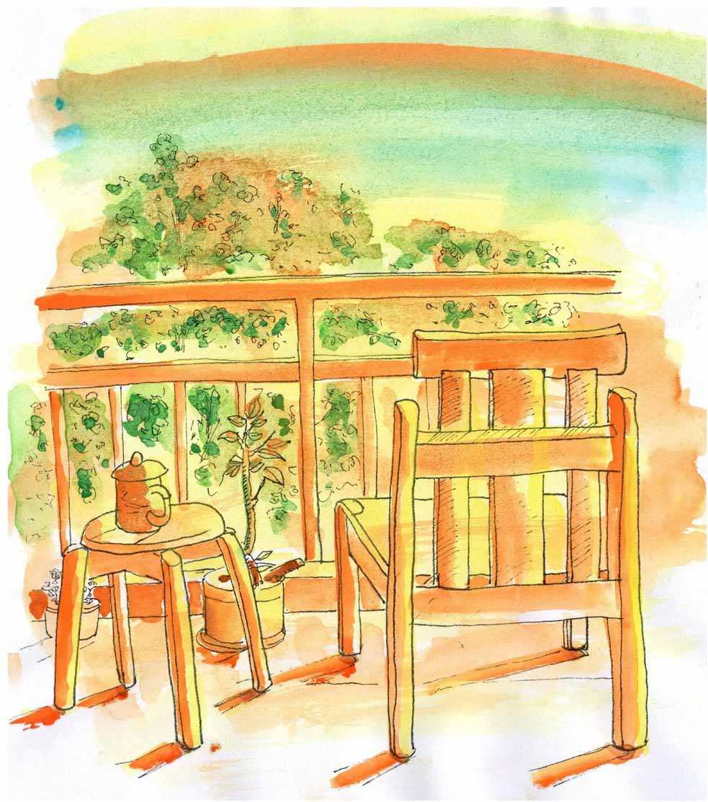

说起来，是在两年前回家过年的时候，我第一次看到这本书。当时，它还是刚打印出来的初稿形式，我还真吃了一惊，老爸是什么时候写的这个东西？我好奇地看着书稿，里面的对话让我回想起多年前，具体说来是我高中毕业在家的那个暑假……
老爸教过多年的离散数学，这个我是知道的。大概也正因为如此，就“离散数学”作为专题，我们一起谈论了一个暑假，虽然美其名曰“谈论”，其实多数时候是他说我听的“授课”形式，中间夹杂一些闲聊。
上大学后我发现他的身体大不如前，颈椎的老毛病好像越来越严重了，平时他老抱怨计算机搞坏了他的脖子，现在，他竟然有心地将我们的对话和当时他发给我的一些“授课”资料整理出一本书来。但不知何故，他把里面对话的两个人的性别做了修改，“父子”变成了“母女”，竟然还给我编了“小文”这么个俗气的名字，亏老爸想得出来。咳，当时我问过他几次为什么要这么写，他都含糊其词，只是说，你现在不是编辑吗？看这个能整成一本书不？然后就跑出去跟一帮朋友打乒乓球去了。
我猜老爸写这本书，可能还是想给那些即将学习离散数学或对计算机知识感兴趣的人提供点帮助吧，他身体又不是很好，我就把整理稿件的任务接了过来。现在，这本书即将正式出版，为慎重起见，我觉得有必要补充一两句话，以此作为本书的序吧。
谈到本书的主要话题“离散数学”，它是数学大家庭的一员，它研究的是一些“离散”的对象。大家常说，我们身处一个“信息时代”，眼睛盯着计算机屏幕的状态已经成为生活的一部分，电子邮件、QQ消息、视频、图片……都是我们每天接触的信息，这些信息的最小计量单位是“比特”，都是以转换成“0”和“1”这种离散的方式存储、处理和传输的。大概也是由于这个原因，物理学家约翰·惠勒说“万物源自比特”。
可以这样说，现代人所离不开的计算机其实处理的都是离散对象，从某个方面讲，计算机科学的数学语言就是离散数学。
不过老爸写的这本小书不是有关离散数学的教科书，我觉得他是想写本普及读物，引起读者对离散数学的兴趣。
阅读对象可以是即将进入计算机以及相关学科学习的大学生或对计算机知识感兴趣的读者；也可以是中学生，希望他们能尽早知道，现代数学还有着更广阔的天地（但愿他们有更多的时间读课外读物，各个方面的，而不是一头扎在题海里，早早失去了对数学的兴趣）。
读本书不用急，闲暇时随意翻翻也行，即便是从任意章节开始，在离散世界的岛屿间跳跃都是可以的。
谈数学，一般都离不开公式和推导，这样做的好处是严谨，但也会让一些人望而生畏，有什么办法让数学变得有趣些呢？
我从小喜欢看一些漫画书，我十分欣赏台湾蔡志忠先生“漫画国学”和韩国李元馥先生“漫画欧洲”系列丛书。后来又喜欢上了法国让·雅克·桑贝的漫画。我想，何不在这本书里画点漫画呢，也许有趣的漫画可以拉近与读者的距离。我把这个想法告诉了老爸，他自己本人也是个老漫画迷，当即表示可以试试。
为了把心中构思的插图用画笔表达出来，我还私下拜师学了一点儿的手绘技巧，一会儿模仿这个，一会儿模仿那个，尝试画了一些插图，但是自感能力有限，最后的效果差强人意，还请读者见谅。
哦，差点忘了跟大家交代，我曾经是计算机专业的学生，后来也是出于个人兴趣，目前是一家计算机杂志的文字编辑，老爸对我的选择也没多说什么。我觉得那个夏天大概是我们在一起聊天最多的时候，现在我们平时各忙各的，交流越来越少了，但说实在的，直到现在，我还经常回想起那个我和爸爸一起谈论离散数学的炎热夏天……
